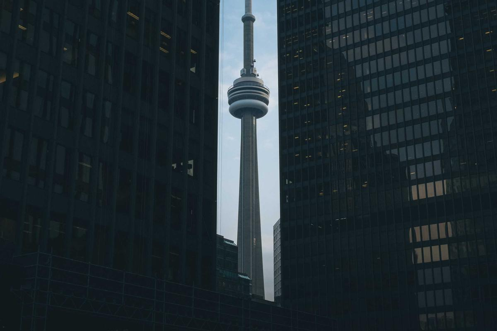

📋 行程概览
🚄
3 ~ 3.5 h
上海/苏州→济南西站高铁直达
💰
¥1,200 ~ 1,800
人均预算（高铁+住宿+吃玩）
🚄 交通方案
| 出发地 | 用时 | 说明 |
|---|
| 上海 → 济南西 |
约 3h |
最快2h59min（G8/G10/G22等标杆车），二等座约 ¥480
上海虹桥站出发，每天数十趟车次 |
| 苏州 → 济南西 |
约 2h50min |
最快2h46min（G6次），二等座约 ¥380~440
苏州北站出发，班次密集 |
| ⭐ 碰头方案 |
— |
济南西站站内汇合，再一起打车去市区（约 25~30 分钟）
或坐地铁1号线转2号线直达大明湖附近 |
💡 提醒：端午节假期建议尽早购买往返高铁票。上海苏州均有大量车次到济南西站，选择非常灵活。
📅 3天2晚详细行程（不累·漫游版）

🌊 大明湖 · 超然楼夜景 — 泉城地标，傍晚亮灯瞬间超震撼
🔹 Day 1（6/19 周五）— 抵达 + 大明湖夜游
| 时间 | 行程 | 备注 |
|---|
| 中午 |
各自高铁出发 → 济南西站碰头 |
轻松 |
| 14:00 |
到酒店办入住，休息一下 |
躺平 |
| 15:30 |
🍜 午饭 — 超意兴吃把子肉 / 芙蓉街逛吃油旋+甜沫 |
美食 |
| 17:00 |
🌳 大明湖散步 — 免费，沿湖慢走，荷花季（6月正好初荷🌷） |
拍照 |
| 19:00 |
🏯 超然楼亮灯 — 亮灯瞬间超级震撼，提前占好位置！ |
必看 |
| 19:30 |
🌃 曲水亭街+百花洲夜逛 — 青石板流水人家，找家小酒馆坐坐 |
轻松 |
🍖 济南必吃 — 把子肉、九转大肠、糖醋黄河鲤鱼、葱烧海参
🔹 Day 2（6/20 周六）— 泉水漫步 + 鲁菜盛宴
| 时间 | 行程 | 备注 |
|---|
| 自然醒 |
🥟 穆得老周家 吃牛肉烧饼+羊汤（神仙搭配！） |
早餐必吃 |
| 10:00 |
⛲ 趵突泉（门票¥40）— 东门进，看三股水喷涌，早去避开旅行团 |
泉水 |
| 11:30 |
🪷 五龙潭（紧邻趵突泉，门票¥5）— 人少清静，泉水清澈，古风亭台 |
小众 |
| 12:30 |
🍜 鲁菜午餐 — 燕喜堂（百年老字号）或魁盛居
必吃：九转大肠、糖醋黄河鲤鱼、奶汤蒲菜 |
美食重头戏 |
| 14:30 |
🆓 黑虎泉 — 免费！带水杯接泉水，看大爷打水，最地道的泉城慢生活 |
免费 |
| 16:00 |
☕ 经三路/老商埠区咖啡馆 — 民国风街道，找家咖啡馆发呆拍照 |
躺平 |
| 18:30 |
🍺 宽厚里夜市 — 逛吃+买伴手礼，泉水豆腐/油旋/扒蹄 |
轻松 |
🔹 Day 3（6/21 周日）— 登高望远 + 返程
| 时间 | 行程 | 备注 |
|---|
| 自然醒 |
退房，行李寄存前台 |
睡到饱 |
| 10:00 |
⛰️ 千佛山（门票¥30）— 索道上山单程¥20，山顶俯瞰全城 |
轻松 |
| 12:00 |
🍜 最后一顿鲁菜 — 四季明湖·鲁菜海鲜（明湖店）
葱烧海参、奶汤全家福、明湖脆藕 |
完美收官 |
| 14:00 |
回酒店取行李 → 济南西站 → 各回各家 🏠 |
返程 |
🎯 如果想更小众：Day 2 下午不去黑虎泉的话，可以换成 老舍纪念馆（露台拍老城全景，人少出片）或 山东博物馆（免费需预约，十大镇馆之宝）。
🏨 住宿推荐（双床房 · 干净安静 · 性价比）
| 酒店 | 价格/晚 | 特点 | 推荐理由 |
|---|
| 济南大明湖城际酒店 |
¥250~400 |
2025新开业 评分4.8 |
华住旗下高端品牌，地铁口，卫生隔音好，高层远眺大明湖 ⭐ |
| 如家精选（大明湖店） |
¥200~350 |
评分4.7 免费停车 |
步行10分钟到大明湖，零压床垫，性价比高 |
| 如家商旅（泉城路店） |
¥250~400 |
位置绝佳 |
楼下就是世茂广场、宽厚里，逛吃最方便 |
| 星程饭店（大明湖站店） |
¥100~150 |
2025新开业 超低价 |
预算首选！高楼层安静，全新装修，离景区稍远但性价比炸裂 |
📍 建议住大明湖/泉城路商圈 — 所有景点都在步行或共享单车范围内，逛吃超方便。
🍜 必吃美食清单（不踩雷）
🥇 鲁菜经典（正餐必点）
| 菜名 | 推荐餐厅 | 人均 | 点评 |
|---|
| 九转大肠 |
燕喜堂 / 魁盛居 |
¥80~120 |
鲁菜头牌！酸甜苦辣咸五味俱全 ⭐ |
| 糖醋黄河鲤鱼 |
燕喜堂 / 会仙楼 |
¥80~120 |
造型霸气，外酥里嫩，酸甜口 |
| 葱烧海参 |
四季明湖·鲁菜海鲜 |
¥100~150 |
鲁菜天花板，葱香浓郁，海参Q弹 |
| 奶汤蒲菜 |
燕喜堂 / 文升园 |
¥50~80 |
济南特有的奶汤菜，清香鲜甜 |
| 爆炒腰花 |
燕喜堂 / 阳光家常菜 |
¥60~90 |
考验火候的功夫菜，脆嫩不腥 |
🥈 济南灵魂小吃（街头必吃）
| 美食 | 推荐店铺 | 价格 | 点评 |
|---|
| 把子肉 |
刘小忙把子肉 / 武岳庙把子肉 |
¥15~25 |
济南灵魂美食！酱香浓郁，入口即化 ⭐ |
| 牛肉烧饼+羊汤 |
穆得老周家 |
¥20~30 |
"神仙搭配"！烧饼酥脆，羊汤鲜美 ⭐ |
| 油旋 |
芙蓉街/老字号铺子 |
¥3~5 |
济南专属！外酥里软，葱香四溢 |
| 甜沫 |
超意兴 / 老济南早餐摊 |
¥3~5 |
咸口小米粥配花生粉条，暖胃早餐 |
| 泉水豆腐 |
宽厚里 / 百花洲 |
¥10~15 |
泉水做的豆腐，嫩滑清甜 |
⚠️ 排队提示：燕喜堂、魁盛居等热门鲁菜馆建议 11:00 或 17:00 前到店，避免排队。刘小忙把子肉等网红店也要趁早。
📸 闺蜜拍照机位
| 地点 | 拍照亮点 | 最佳时间 |
|---|
| 超然楼 |
亮灯瞬间金光灿灿，湖面倒影绝美 |
傍晚 19:00 亮灯前后 |
| 曲水亭街 |
青石板+泉水人家，穿新中式/旗袍超搭 |
上午 9-11 点 |
| 趵突泉·白雪楼 |
古建+泉水+绿植，色彩丰富 |
上午 10 点前 |
| 大明湖·超然楼倒影 |
湖边找角度拍楼+倒影，对称构图 |
清晨或傍晚 |
| 经三路老商埠 |
民国风建筑，咖啡馆门口，文艺感拉满 |
下午 3-5 点 |
💰 预算估算（人均）
| 项目 | 费用 | 说明 |
|---|
| 🚄 往返高铁 |
¥400 ~ 500 |
上海 ¥480 / 苏州 ¥380 ~ 440（按单程均价估算） |
| 🏨 住宿 2 晚（双床房平摊） |
¥200 ~ 400 |
大明湖周边中档连锁/品质酒店 |
| 🍜 吃饭 3 天 |
¥350 ~ 550 |
小吃+鲁菜正餐+咖啡茶饮 |
| 🎫 门票 |
¥80 ~ 100 |
趵突泉¥40 + 千佛山¥30 + 五龙潭¥5 |
| 🚕 市内交通 |
¥50 ~ 100 |
打车+共享单车+地铁 |
| 合计 |
¥1,200 ~ 1,800 |
丰俭由人，预算友好 ✅ |
🏛️ 景点速览
| 景点 | 门票 | 用时 | 一句话点评 |
|---|
| 趵突泉 |
¥40 |
1.5~2h |
天下第一泉，来济南必去 |
| 大明湖 |
免费 |
1~2h |
6月初荷正好，散步超惬意 |
| 五龙潭 |
¥5 |
1h |
人少清静，泉水清澈，隐藏宝藏 |
| 黑虎泉 |
免费 |
1h |
带杯子接泉水喝，最地道体验 |
| 千佛山 |
¥30 |
1.5~2h |
索道上山+步行下山，俯瞰全城 |
| 曲水亭街 |
免费 |
不定 |
青石板流水人家，拍照一绝 |
| 山东博物馆 |
免费 |
2h |
需预约，十大镇馆之宝值得看 |
✅ 端午节特别提醒
1️⃣ 提前预约！ 趵突泉、山东博物馆建议提前1~2天线上预约。山东博物馆周一闭馆（6/22 周一，不影响）。
2️⃣ 趵突泉要早去 — 9点前到避开旅行团，否则人从众。
3️⃣ 超然楼亮灯占位 — 大约 19:00~19:30 亮灯，建议提前 20 分钟到湖边找好位置。
4️⃣ 端午尽早订票订房 — 济南虽然不是最热门目的地，但假期还是会涨价的。
5️⃣ 穿搭建议 — 浅色/新中式/旗袍最出片！6月济南较热，带伞和防晒。平底鞋必备。
6️⃣ 共享单车+地铁 — 老城区景点密集，骑共享单车比打车方便。
7️⃣ 泉水可以喝 — 黑虎泉有正规取水口，带个空瓶子接泉水喝，清甜！
8️⃣ 天气 — 6月济南较热（30℃+），建议上午和傍晚活动，中午找咖啡馆/商场避暑。
🤔 景德镇 vs 济南 怎么选？
| 对比项 | 🏺 景德镇 | 💧 济南 |
|---|
| 气质 |
文艺手工·慢生活 |
泉水叮咚·烟火气 |
| 高铁用时（上海） |
2.5~3h |
约 3h |
| 高铁用时（苏州） |
3~3.5h |
约 2h50min |
| 美食特色 |
江西辣味+小吃 |
鲁菜经典+把子肉 |
| 闺蜜活动 |
陶艺体验+做陶瓷🏺 |
泉水边散步+喝泉水☕ |
| 端午拥挤度 |
⭐ 人少（小众） |
⭐⭐ 中等（有旅游团但可控） |
| 适合 |
喜欢动手做东西、文艺风 |
喜欢历史美食、悠闲散步 |